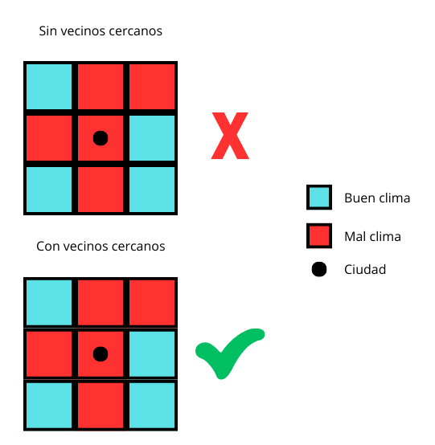
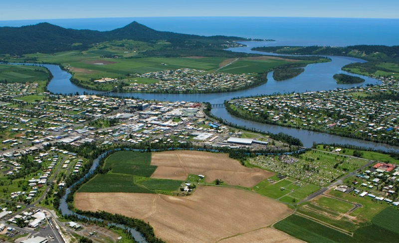
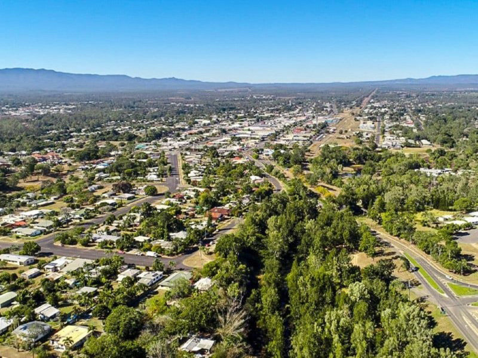
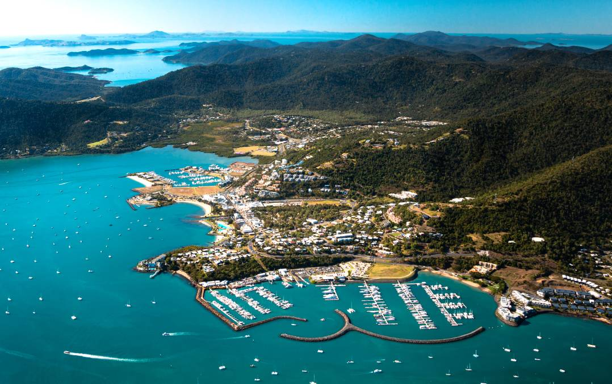
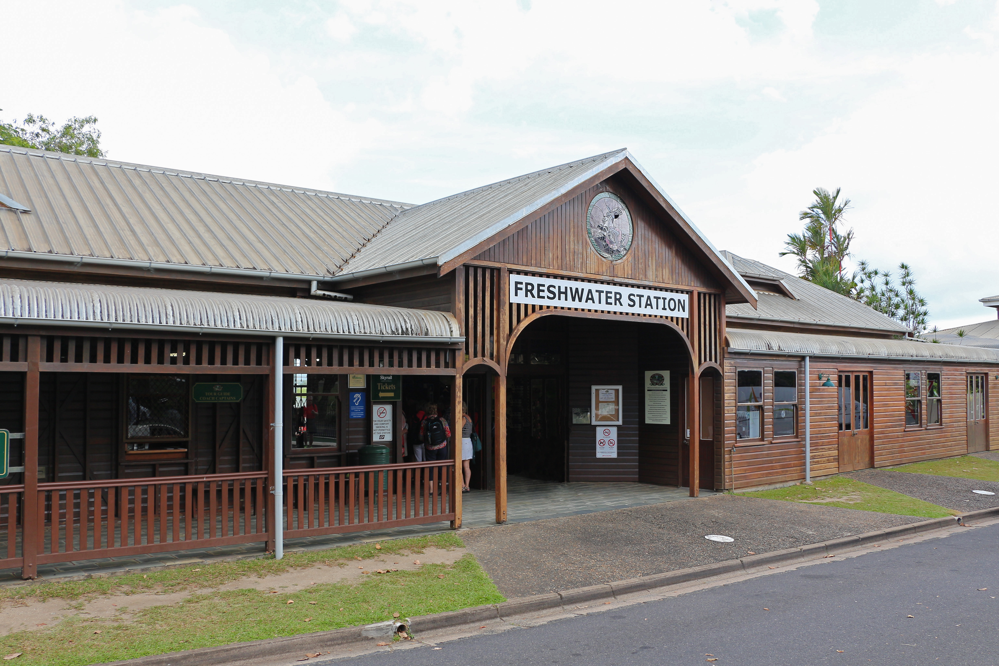

Australia es el país más grande de Oceanía y el sexto más grande del mundo, con una superficie de 7,741,220 km². Es conocido por sus diversos paisajes y climas, que van desde desiertos hasta selvas tropicales y montañas. Australia limita con los océanos Índico, Pacífico y Austral. Canberra es la capital y Sídney es la ciudad más poblada.
Para llevar a cabo este proyecto se necesitan 3 elementos: un mapa vectorial de los límites de Australia, un mapa con la mayor cantidad de ciudades y las capas ráster con los datos de las temperaturas y precipitaciones de cada mes.
Un lugar con clima perfecto es aquel donde sus temperaturas máximas no sobrepasan los 30 grados Celsius y sus temperaturas mínimas se mantienen por encima de los 10 grados Celsius en todo momento del año. Además, sus precipitaciones no deben ser mayores a 15 mm/hora.
Para realizar el análisis primero se importa el mapa vectorial de Australia a Grass Gis, se convierte a ráster y se crea una máscara, luego se importan los datos ráster de cada mes del año 2021 obtenidos del sitio WorldClim. En mi caso encontré una base de datos con los nombres y coordenadas de las ciudades de Australia, tomé eso datos y los importé como puntos en Grass y luego utilizando el comando v.what.rast se crea una columna en la base de datos con el valor ráster donde se encontraba el punto, repetí el proceso con cada capa ráster, luego exporté la base de datos en formato CSV y busqué qué ciudades cumplían los requisitos utilizando el filtro de Excel.
Finalmente obtuve que Innisfail era la única ciudad con un clima “perfecto”, sin embargo, con esta metodología lo que analizo es el valor ráster donde se encuentra el punto especifico y ese punto no representa las ciudad como tal, que es un área, por lo tanto para hacerlo un poco más justo se utilizó el método de vecinos cercanos con un valor de 3 celdas para calcular una nueva capa ráster con el mínimo en el caso de las temperaturas máximas y el máximo en el caso de las temperaturas mínimas de esta manera se crean “zonas” con clima “perfecto” y hay más chance de que un punto se encuentre dentro de estas zonas. Este proceso se realiza con cada una de las capas ráster y se repite el proceso para crear nuevas columnas en la base de datos, generar el CSV y analizarlo con Excel, como resultado se obtiene que Innisfail, Cairns, Mareeba y Freashwater tienen un clima “perfecto”.
A continuación se muestra imágenes ráster de las áreas con mejor clima, dado que en Australia diciembre es el mes más caliente y julio el mes más frío se utilizan estos meses como referencia para visualizar las zonas con mejor clima.
Las temperaturas mayores a 30 grados Celsius se representan con el color amarillo, temperetaras menores a 10 grados Celsius con el color morado y las zonas con temperatura entre 10 y 30 grados Celsius de color turquesa mientras que los puntos rojos representan ciudades. Los puntos rojos que se encuentran encerrador en un cuadro negro represetan las ciuades con clima perfecto.
De las 323 ciudades analizadas se obtuvo que solo 4 cumplen con las características de un clima perfecto:
Innisfail es una ciudad regional y localizada en la región de Cassowary Coast, Queensland, Australia. La ciudad es conocida por sus industrias de azúcar y banano. Innisfail es el principal centro urbano de la región de Cassowary Coast y cuenta con una población de alrededor de 7,236 personas.
La temperatura máxima durante el 2021 fue de 27 grados Celsius y la alcanzó en el mes de diciembre, mientras que la temperatura más baja fue de 14 grados Celsius y se mantuvo durante los meses de junio, julio y agosto.
Mareeba es una localidad rural en el norte de Queensland, Australia. Se encuentra en la confluencia de los ríos Barron, Granite Creek y Emerald Creek. El nombre de la ciudad proviene de una palabra aborigen que significa "encuentro de las aguas". Mareeba fue colonizada por europeos en 1877 y se convirtió en una ciudad activa con la llegada del ferrocarril en 1893. Mareeba también alberga una comunidad albanesa australiana y cuenta con una población de alrededor de 11,000 habitantes. La ciudad es conocida por sus plantaciones de café, granjas de frutas y campos de caña de azúcar, y cuenta con diversas atracciones turísticas como la Mezquita de Mareeba, el Museo de la Herencia de Mareeba y la plantación Skybury.
Para diciembre, el mes más caliente, Mareeba alcanza una temperatura máxima de 30 grados Celsius mientras que en julio alcanza una temperatura mínima de 19 grados Celsius.
Cairns es una ciudad en el noreste de Queensland, Australia, que fue fundada en la década de 1870 como punto de recolección de aduanas. Creció debido al descubrimiento de oro y estaño, el cultivo de caña de azúcar y diversas industrias agrícolas como lácteos, frutas, tabaco y maní. La ciudad cuenta con un puerto, aserraderos, fundiciones y cervecerías, y es un centro turístico para la Gran Barrera de Coral y la pesca deportiva. Cairns se fusionó con Douglas para formar el Consejo Regional de Cairns en 2008. La ciudad tiene una población de 156,169 habitantes y es conocida por su aeropuerto internacional y sus resorts.
Cairns alcanza los 30 grados Celsius en diciembre mientras que su temperatura mínima es de 19 grados Celsius en julio.
Freshwater es un suburbio de la costa norte de Sídney, en el estado de Nueva Gales del Sur, Australia. La ciudad está ubicada a 17 km al noreste del distrito central de negocios de Sídney y es parte del Consejo de Playas del Norte. Freshwater es conocida por su playa homónima, que es la primera playa al norte de Manly, y es extremadamente popular entre las familias y los surfistas. La playa está ubicada entre dos cabos y tiene una fabulosa piscina natural en el extremo norte con instalaciones de ducha y baño
Al igual que las 3 ciudades anteriores su temperatura máxima es de 30 grados Celsius en diciembre y en julio alcanza si temperatura mínima más baja que es de 19 grados Celsius.
Elaborado por: Anthony Alvarado Garro